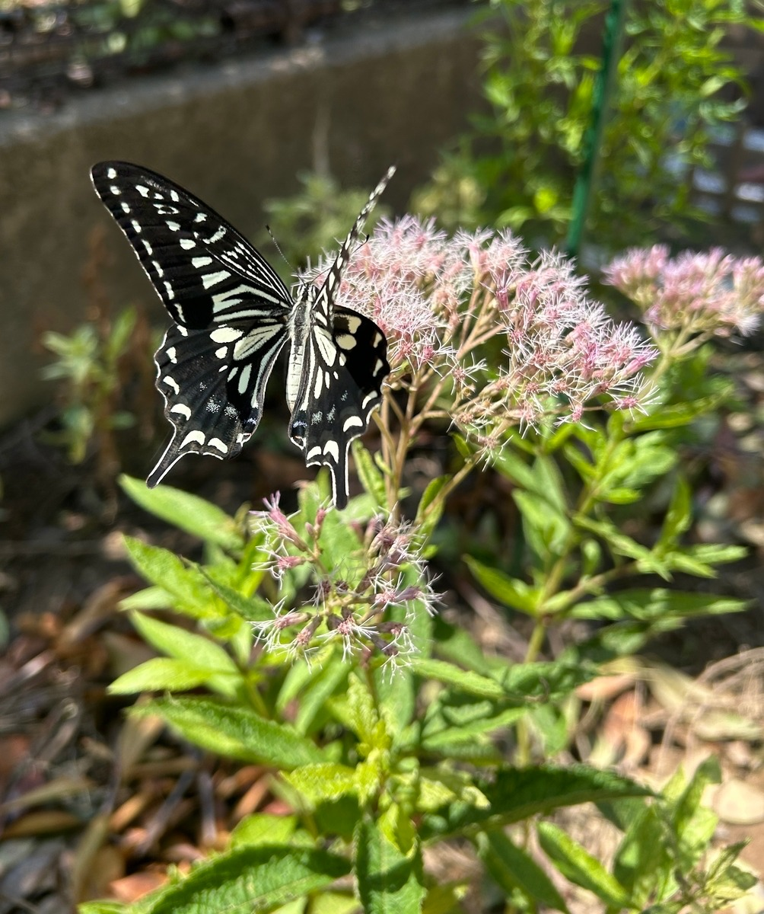

2025/08/30 アサギマダラを待つ庭に、ナミアゲハが訪れる
アサギマダラを庭に呼びたくて、フジバカマやユーパトリウムを育てています。飛来を期待する10月上旬はまだ先ですが、開花したユーパトリウム・ベイビージョーには、ナミアゲハ（並揚羽）が毎日のように蜜を吸いに来るようになりました。

ナミアゲハとキアゲハはよく似ていますが、見分けるときに分かりやすいのが前翅の付け根部分です。ナミアゲハには縞模様があるのに対し、キアゲハはこの部分が黒っぽく見えます。
ナミアゲハはいろいろな植物の花を訪れる蝶なので、特にフジバカマだけを好むわけではありません。それでも、わが家ではベイビージョーもすっかり蜜源のひとつになったようです。
ベイビージョーを購入して植え付けたのは8月9日。それからまだ3週間ほどですが、花が咲き、こうして蝶が訪れる姿を見ることができました。
目当てのアサギマダラを待つ間にも、ナミアゲハが毎日のように訪れてくれるのはうれしいものです。いろいろな蝶が花に立ち寄る姿を楽しみながら、秋のアサギマダラの飛来を待ちたいと思います。
0 件